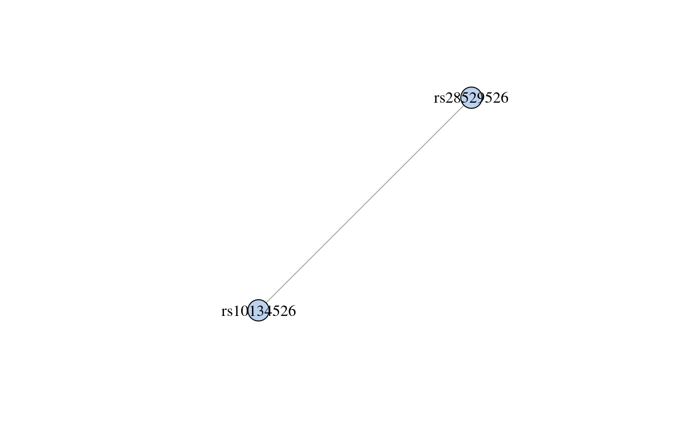
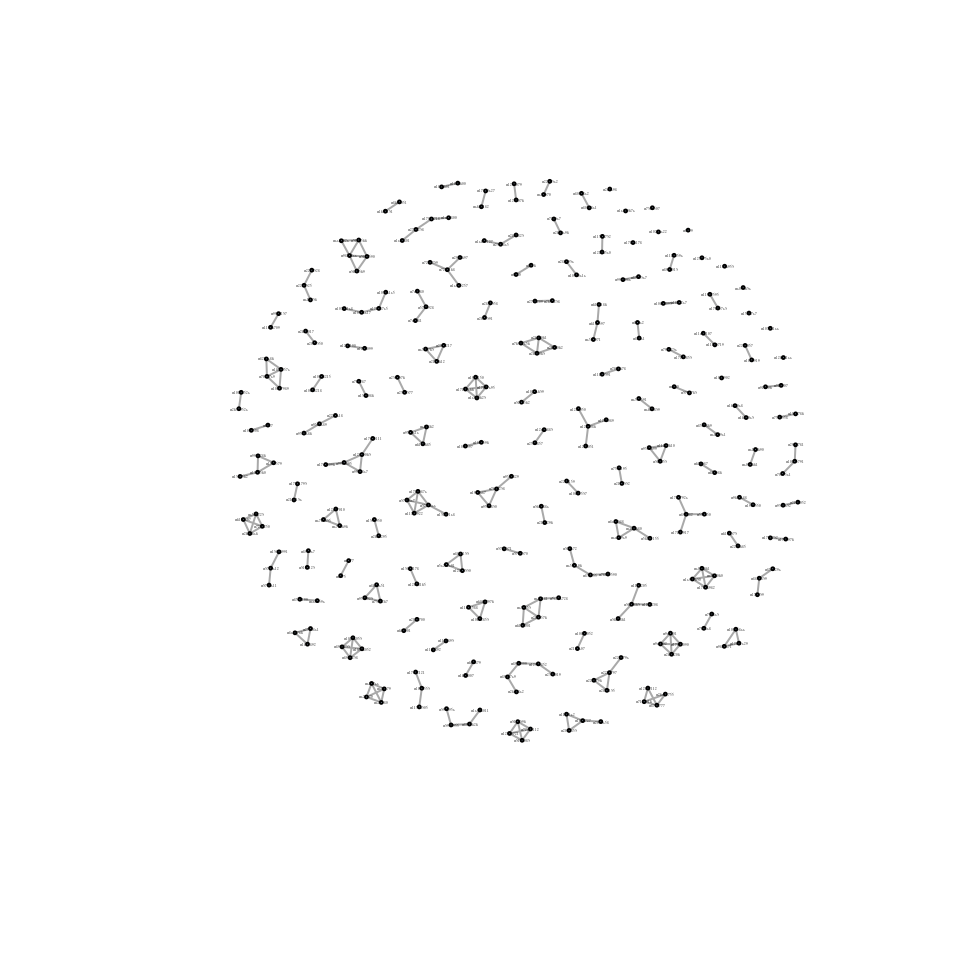
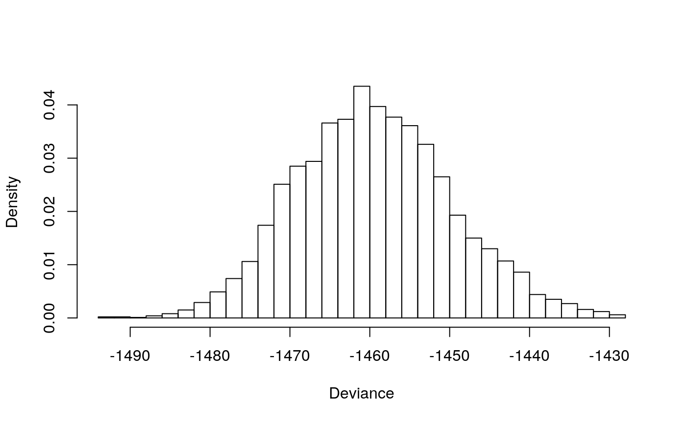

genetic_example.RmdThe outlier detection method (Lindskou, Svante Eriksen, and Tvedebrink 2019) arose from a problem in the forensic science community where it is of great interest to make statements about the geographical origin of a DNA sample. This is in general a very complicated matter. More over, when DNA markers are in linkage disequilibrium things get even more complicated. The 1000 Genomes Project set out to provide a comprehensive description of common human genetic variation by applying whole-genome sequencing to a diverse set of individuals from multiple populations (The 1000 Genomes Project Consortium 2015). In the molic package we include the final data from the project which includes \(2504\) DNA profiles coming from five different continental regions; Europe (EUR), Africa (AFR), America (AMR), East Asia (EAS), South Asia (SAS). Each DNA profile is the compound of two rows in the data tgp_dat, one for each chromosome copy. This makes the outlier procedure slightly more complicated since we must fit a model to each copy and aggregate the information (but we shall see in a moment that it is not hard to do using the molic package).
The data includes \(276\) SNP markers grouped in \(97\) microhaplotypes; in other words, the SNPs within a microhaplotype are so close that they cannot be assumed to be in linkage disequilibrium and we must take into account their mutal dependencies. We do this with the use of decomposable graphical models. See the outlier_intro for more details on the model. The microhaplotype grouping is provided is the list tgp_haps.
We show how to test that an unknown DNA profile z can be assumed to originate from the European database. We shall pick a random DNA profile from the American database and assume we do not know the origin. We first load the necessary libraries
Next, we extract the relevant data
# SNPs grouped into (micro) haplotypes
haps <- tgp_haps
# All the Europeans
eur <- tgp_dat %>%
as_tibble() %>%
filter(pop_meta == "EUR")
# Extracting the two databases for each copy of the chromosomes
eur_a <- eur %>%
filter(grepl("a$", sample_name))
eur_b <- eur %>%
filter(grepl("b$", sample_name))Then we need to model the relationship between SNPs within all chromosomes
# Fitting graphs for the two chromosome copies
Ga <- lapply(haps, function(h) {
fit_graph(eur_a %>% select(h), trace = FALSE)
})
Gb <- lapply(haps, function(h) {
fit_graph(eur_b %>% select(h), trace = FALSE)
})The variables Ga and Gb are now list objects where each object is a c("fwd", "gengraph", "list") object. Lets print and plot one of them,
print(Ga[[2]])## A Decomposable Graph With
## -------------------------
## Nodes: 3
## Edges: 1 / 3
## Cliques: 2
## <fwd, gengraph, list>
## -------------------------plot(Ga[[1]])
But all of these individual graphs should be represented as one big graph
# Merge the fitted graphs into a single graph
Ga_union <- Ga %>%
unname() %>%
lapply(function(x) adj_lst(x)) %>%
unlist(recursive = FALSE)
Gb_union <- Gb %>%
unname() %>%
lapply(function(x) adj_lst(x)) %>%
unlist(recursive = FALSE)These objects are now plain list objects. But we can convert them to a gengraph in order to plot and print
# We can convert the adjacency lists to a gengraph object and plot/print the graph
g <- gengraph(eur_a %>% select(unname(unlist(haps))), "gen", Ga_union)
print(g)## A Decomposable Graph With
## -------------------------
## Nodes: 302
## Edges: 234 / 45451
## Cliques: 161
## <gengraph, list>
## -------------------------plot(g, vertex.size = 1, vertex.label.cex = 0.1)
Next, we extract a DNA profile from the American database
amr <- tgp_dat %>%
as_tibble() %>%
filter(pop_meta == "AMR")
set.seed(20183007)
z1 <- amr %>%
filter(grepl("a$", sample_name)) %>%
select(unname(unlist(haps))) %>%
sample_n(size = 1) %>%
unlist()
z2 <- amr %>%
filter(grepl("b$", sample_name)) %>%
select(unname(unlist(haps))) %>%
sample_n(size = 1) %>%
unlist()and since the hypothesis is that z belongs to eur, we append z
We are now ready to fit the outlier model
ma <- outlier_model(as.matrix(dz1), Ga_union, nsim = 5000, ncores = 1, validate = FALSE)
mb <- outlier_model(as.matrix(dz2), Gb_union, nsim = 5000, ncores = 1, validate = FALSE)And finally, we combine the information into a single mixed outlier test
m <- fit_mixed_outlier(ma, mb, z1, z2)
print(m)##
## --------------------------------
## Simulations: 5000
## Variables: 304
## Observations: 1008
## Estimated mean: -1459.47
## Estimated variance: 96.92
## ---------------------------
## Critical value: -1442.477
## Deviance: -1400.392
## P-value: 0
## Alpha: 0.05
## <mixed_outlier, outlier, outlier_model, list>
## --------------------------------# Visualize the density of the deviance statistic
pmf(m)
We can conclude, from the print and pmf, that z does not originate from Europe with a high degree of certainty.
Lindskou, Mads, Poul Svante Eriksen, and Torben Tvedebrink. 2019. “Outlier Detection in Contingency Tables Using Decomposable Graphical Models.” Scandinavian Journal of Statistics. Wiley Online Library. doi:10.1111/sjos.12407.
The 1000 Genomes Project Consortium. 2015. “A Global Reference for Human Genetic Variation.” Nature 526 (7571). Nature Publishing Group: 68. doi:10.1038/nature15393.